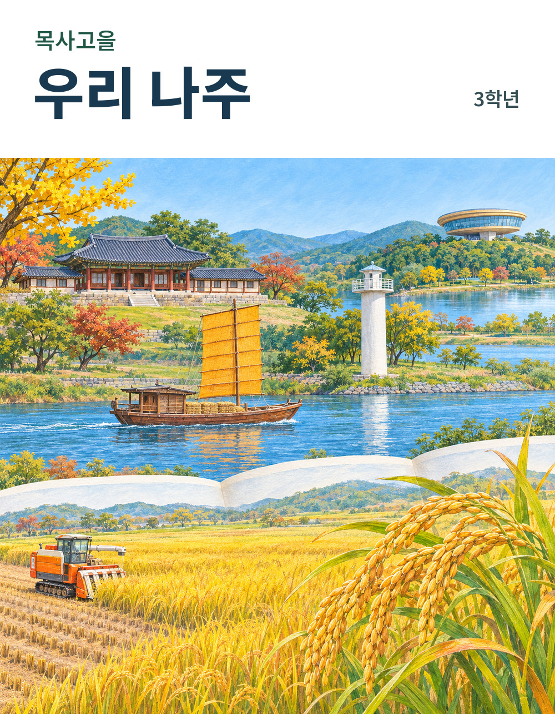
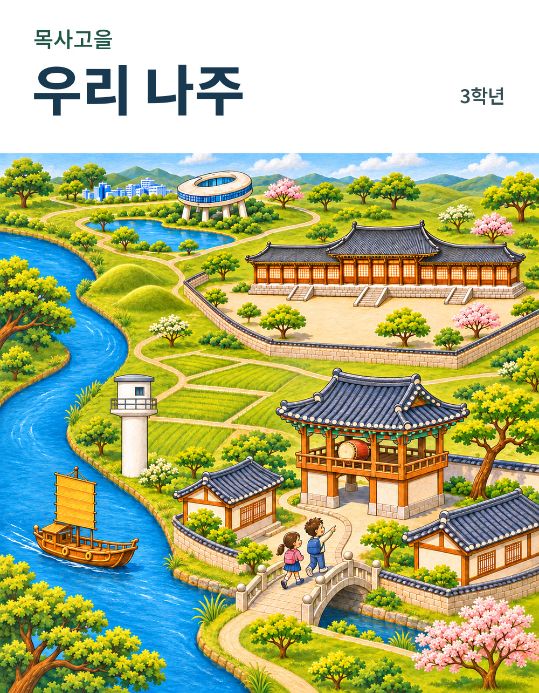
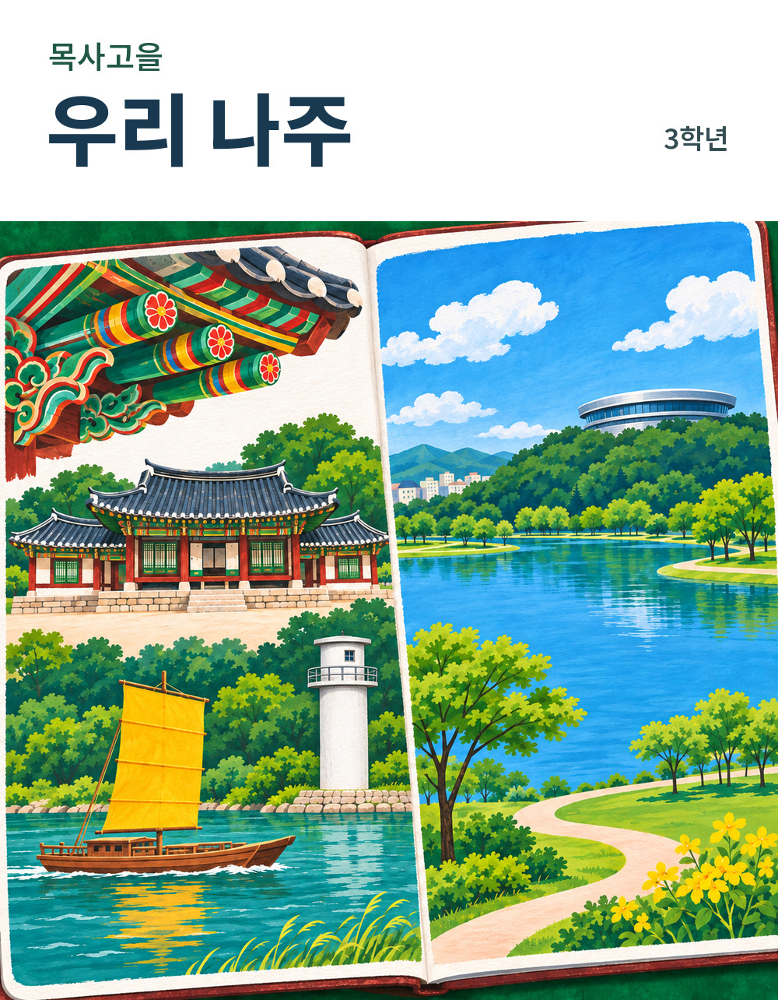
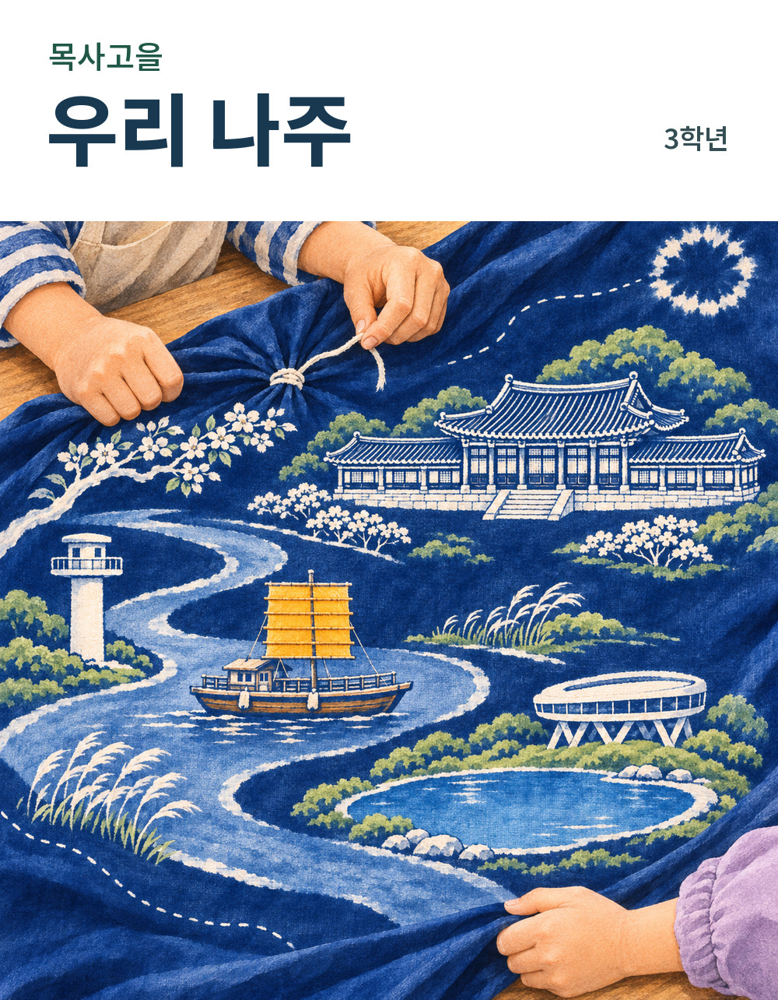
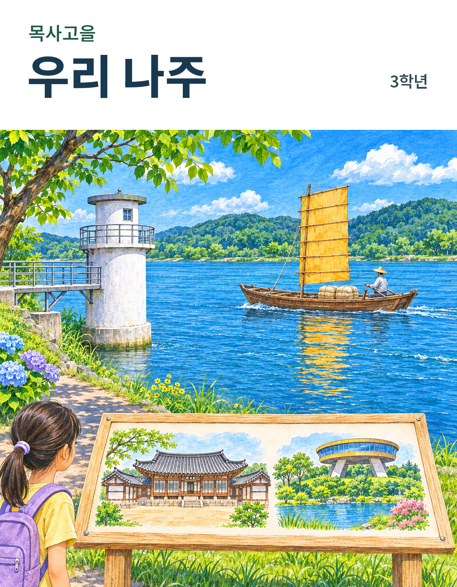
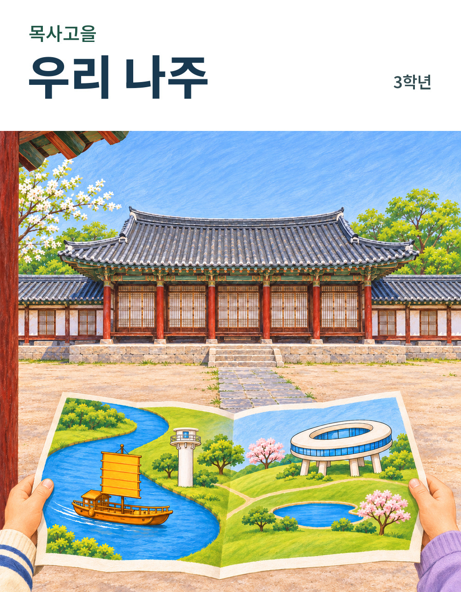

목사고을 우리 나주 · 여섯 방향 앞표지
앞표지마다 영산강, 황포돛배, 영산포등대, 금성관, 빛가람호수공원 전망대를 담았습니다. 표지를 누르면 크게 볼 수 있습니다.
-

06 가을 들녘에서 보는 나주 -

21 골목길을 따라 만나는 나주 -

30 옛 처마와 오늘의 빛가람 -

77 쪽빛 천에 펼쳐지는 나주 -

81 영산강을 따라 읽는 나주 -

82 금성관 마당에서 시작하는 답사